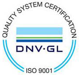
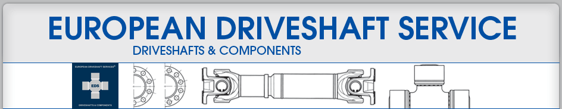

Želje i ideje:
Intermobil d.o.o. sa sjedištem ( Staro Čiče ) kod Velike Gorice usko je specijalizirana tvrtka za proizvodnju spona i krajnika te proizvodnju i reparaturu kardana za cestovni i transportni promet; poljoprivredne i građevinske strojeve i industriju. Intermobil d.o.o. pruža usluge ugradnje udvojenih komandi za auto škole i komandi za osobe s invaliditetom.
Naša misija je kvalitetom svog rada štitimo svoje ime.
Naša vizija je biti prvi na tržištu u svom području rada i steći još veće povjerenje kupaca.
Ovlašteni smo servis European Driveshaft Services kardanskih vratila i dijelova.
Kronologija:
1989 g. – registracija iz obrta u tvrtku pod nazivom „Intermobil“ d.o.o. i gradnja 1.600,00m2 proizvodnog pogona u Starom Čiču kraj Velike Gorice. Pod stručnim vodstvom svog osnivača i tadašnjeg direktora, uvodi se proizvodnja oscilirajućih ramena i krajnika za osobna vozila, a potom i spona i krajnika teretnih vozila.
1994 g. – Početkom devedesetih godina iskazuje se na hrvatskom tržištu velika potreba za popravcima kardanskih vratila. GKN-UNI Cardan prepoznaje u Intermobil-u ozbiljnog i strateškog partnera za našu regiju te potpisuju međusobni ugovor o suradnji. Tvrtka oprema svoj proizvodno – servisni prostor i započinje sa servisiranjem i izradom kardanskih vratila za sve tipove motornih vozila, a nabavkom i puštanjem u rad digitalne balansirke ponudu reparature i proizvodnje kardanskih vratila zaokružuje u jednu cjelinu.
2012. Tvrtka nabavlja i pušta u rad novu digitalnu balansirku proizvođača Schenk